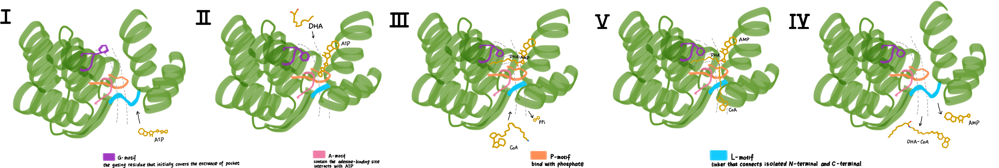
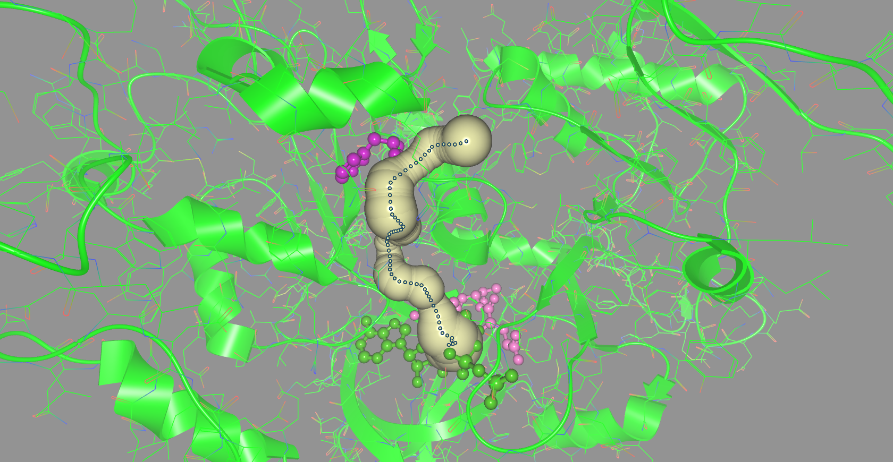

Computer-vision and deep-learning practitioner focused on making generative visual systems
controllable, decomposable, and interpretable. Genuinely curious across
disciplines. In computer vision: designed, built, and still iterating on the Makeup Replayer, a
makeup-decomposition pipeline. In industry: led an AI-agent feature for an employer's
creative-canvas platform and delivered AIGC visuals across e-commerce categories. Earlier in
AI4S: contributed protein-representation modeling and VAEs. Information & Computing Science
undergraduate at XJTLU, class of 2027, bilingual EN/ZH.
Role: Solo — Design + Implementation · 2026.01–present
Nuance-Preserving Transfer
the person
the makeup reference / the style
Makeup Replay as Brushes
loading…
Light-weight 3D Twin and makeup try-on
3D
XMY-059
3D
XMY-063
3D
157_6
3D
189_4
Brush-wise Replay of Any Makeup on Any Face
palette
3D
3D
the person
the makeup reference / the style
brushes
A makeup decompiler: give it a finished makeup photo and it returns a sequence
of brushstrokes you can replay on your own face. The makeup is recovered as four decoupled stages —
Peel — closed-form inversion of α-blended skin + pigment, with a Signed-D term that preserves dark negative values (eyeliner, contour) and bilateral-filter denoising.
Decompose — MediaPipe-468 region segmentation + a temperature-scaled Gaussian-mixture decomposition of each region's pigment layer (evaluated a convex-hull unmix, ultimately dropped it in favour of the Gaussian-mixture model).
Palette Aggregation — merging visually similar / mutually-substitutable colors down to the few that matter.
Replay — Porter-Duff cumulative-coverage compositing; a non-trivial λ derivation guarantees the final stroke reconstructs the target exactly.
Engineering · pure NumPy / OpenCV / scikit-learn — no GPU, end-to-end under 30s
on CPU for a 6MP image, per-region RMSE ≈ 2–4 / 255. The four modules (Peel / Segmentation /
Unmix / Step Generator) each stand alone for adjacent use-cases: dermatology before/after
quantification, brand-color matching, layered-tutorial generation.
3D twin & try-on · a canonical 3D twin and makeup try-on, now in the live demo above.
Next · grafting this decomposable, controllable makeup representation onto a
DiT / diffusion backbone for end-to-end controllable generation.
Acquired by Keyinspiring Try operate on our conceptual demo here (API and file upload are not wired). Unlock full version at KeyIntern.
UI + Data + Growth engineer
▲ Live preview — edit the header fields and watch the render update; hover the attached images to preview them. (Swipe sideways on a phone.)
A resume builder that keeps one CV as the single source of truth and
dresses it into any format (with 6 classic popular ones, or use our template generator by describing desired format in natural language). Every CV is hosted at a
shareable URL — one clickable link you can send to anyone — with a real-time,
PDF-faithful preview synced to a modular form editor.
Highlight features
CV as homepage — our site hosts users' CVs at distinct URLs, and each works as a personal homepage for non-coders.
Six formatter templates — Classic Professional, Elegant, Classic Two-Column, Modern Two-Column, Premium Sidebar, Academic; one data model, six distinct layouts + accents.
Natural-language generation — describe the role and mood, and the workshop compiles a new template, gated by static checks and a repair loop with a 30-minute restore window.
Evidence images — attach images to any project and hover them right inside the live render to preview the artifact.
Engineering · JD-CV matching database: our internal knowledge base can fit users' CV to employers' job description (JD) — it can expand the JD to higher dimensions and therefore decode employers' expectations underlying each keyword, so LangChain RAG can help you exploit the matching parts out of an experience, and write descriptions that better approach the job; Generative UI: upon a user prompt, we generate React components (JSX) under a predefined Interface as contract, and gated by coverage checks, a forbidden-API denylist, esbuild compilation, and an auto-repair loop.
▲ Mulan.ai — the agent orchestrates multi-step content workflows.
Two production agent systems that turn the model from a "chat assistant" into the operator.
At Mulan.ai, an agent orchestrates multi-step content workflows — image and video
generation configured by natural language, with no manual node assembly. At Huazong.ai,
an agent operates the full cDrama (漫剧) pipeline on the production canvas, driving 400+ creators.
Agent orchestrating workflow @ Mulan.ai — reusable image/video generation workflows and natural-language agent interfaces, no manual node assembly.
Agent operating cDrama pipeline @ Huazong.ai — Claude Code subprocess runtime decoupled from the app; a tool-list API exposes every canvas operation so the model drives production directly.
Skill integration — loading private knowledge assets and custom Skills, then iterating tools against real production workflows.
A selection of e-commerce product visuals produced with generative AI — across different
platforms (Xiaohongshu, Douyin, Taobao, TikTok) and product
categories (jewelry, jade & gold, perfume, daily goods), each tuned to its own
audience, format, and brand tone.
Synthetic Biology | MIT Grand Jamboree (Paris) | Manufacture track | Protein modeling + commercialization
Role: Protein Modeling + Commercialization · 2023.12–2025.1
XJTLU-China's 2024 iGEM team (MIT-hosted international synthetic-biology competition, Manufacture
track, presented at the Grand Jamboree in Paris). Our project optimized a fish-oil
biosynthesis pathway through protein engineering. On the modeling team I ran
semi-rational sequence analysis and multi-tool structural modeling with molecular-dynamics
simulation to screen the best engineered protein; downstream we ordered the edited genes and
measured production in wet-lab — the pathway's activity gain came in at +400%.
I also contributed to the commercialization track and helped host the national 100+-team
exchange meet (XJTLU as host school).

Residue-scale catalytic mechanism of LACS — how key pocket residues coordinate ATP, DHA and CoA across the step-wise reaction.
Figure 23 — template ttLACS with four motifs annotated. A-motif in lightmagenta, G-motif and aromatic ring in purple, L-motif in cyan and P-motif in orange.Figure 25 — target LACS1 with four motifs annotated in consistent color palette.

Figure 27 — the chosen tunnel, with G-motif and A-motif highlighted.LACS1 enzyme — homology-modeled 3D structure (animated).
RMSD over a 100 ns MD simulation — wild-type vs mutant. Protein (black), DHA (red), ATP (green); convergence confirms a stable, analysable trajectory.